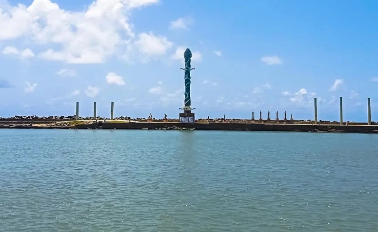
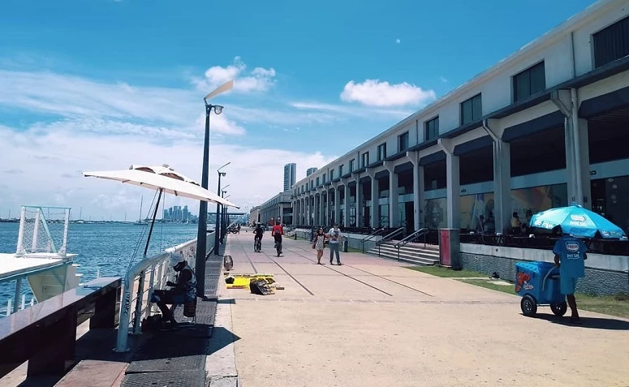

LOCAIS PARA TURISTAR EM RECIFE
PRAÇA DO MARCO ZERO

Também chamada de praça Barão do Rio Branco, o local é considerado um dos destinos mais visitados de Recife.
A atração é cercada por construções e prédios históricos, como o antigo edifício London River Plate Bank e a
Associação Comercial de Pernambuco.
Lá também está situada a pintura da rosa-dos-ventos, que marca o km 0 zero de Recife.
CLIQUE AQUI E SAIBA MAIS
______
EDIFÍCIO DA CAIXA CULTURAL
Prefeitura, comércio de bairros e shoppings têm horários especiais.

Localizada a poucos metros da Praça do Marco Zero, o edifício Caixa Cultural também valoriza a história local. Construído em 1912, o espaço funcionou durante muito tempo como a Bolsa de Valores de Pernambuco. Atualmente é palco de diversas exposições que valorizam a música, o teatro e outras manifestações culturais. O espaço está aberto para visitação de terça a domingo, das 10h às 18h. A entrada é gratuita.
______
PARQUE DAS ESCULTURAS – Francisco Brennand
O Parque das Esculturas homenageia o artista pernambucano Francisco Brennand, pois destaca as suas principais obras no local. O atrativo reúne cerca de 90 esculturas, representadas em uma exposição ao ar livre. Entre as principais obras do autor se destaca a Torre de Cristal, com aproximadamente 32 metros de altura. Por fim, para chegar ao local é preciso alugar um barco a partir do Marco Zero ou ir de carro pela Avenida Brasília Teimosa. O passeio é gratuito.
______
ARMAZEM DO PORTO
Hoje em dia a tapioca é vendida em bares, restaurantes e não somente nas barraquinhas de rua. Todo mundo faz tapioca. Tem até tapioca gourmet, tapioca pizza, sorvete de tapioca, pudim de tapioca…enfim, a nossa criatividade não tem limites.